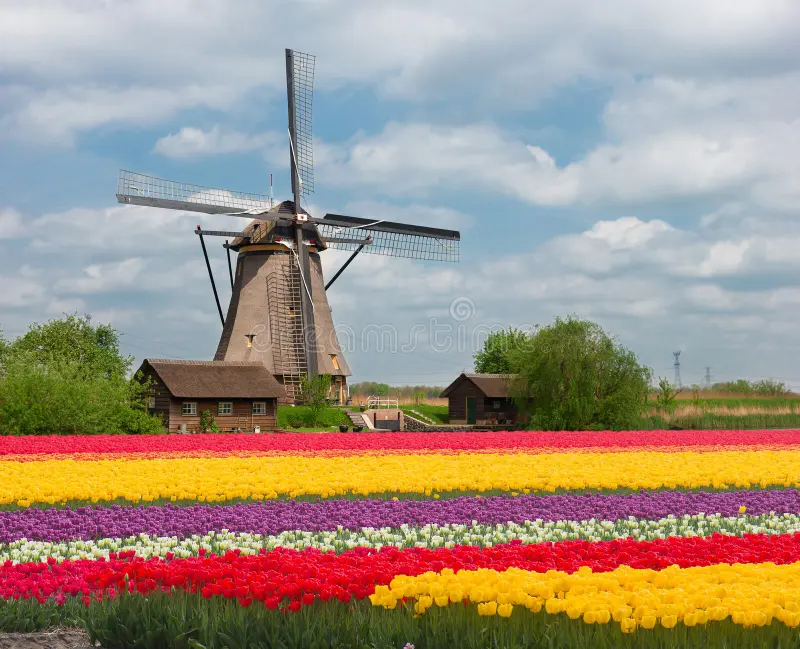

Windmills and tulips
The Netherlands is famous for windmills, tulips and beautiful countryside. These are important symbols of the country.

Learn about some things that make Dutch culture special.
The Netherlands is famous for windmills, tulips and beautiful countryside. These are important symbols of the country.

Dutch people enjoy foods such as cheese, stroopwafels and traditional bread.
Cycling is also an important part of everyday life. Many Dutch cities have special bicycle paths.
Dutch culture is diverse and interesting.